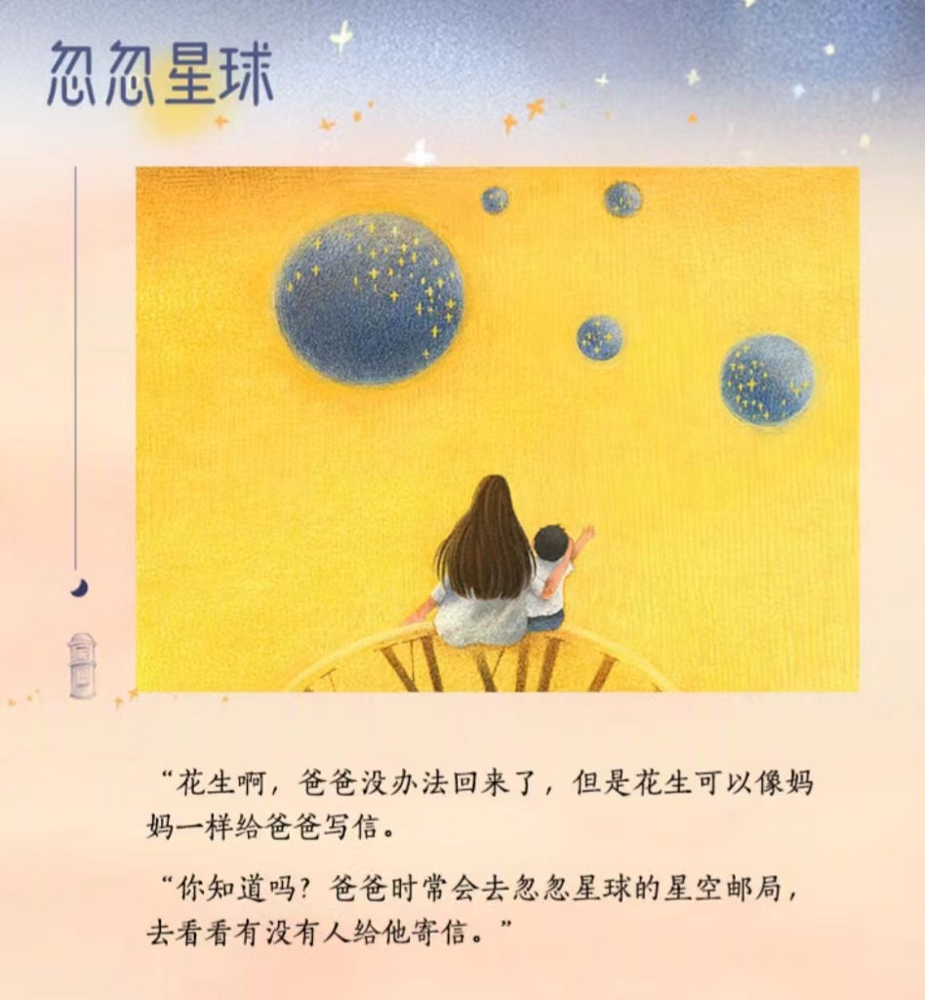
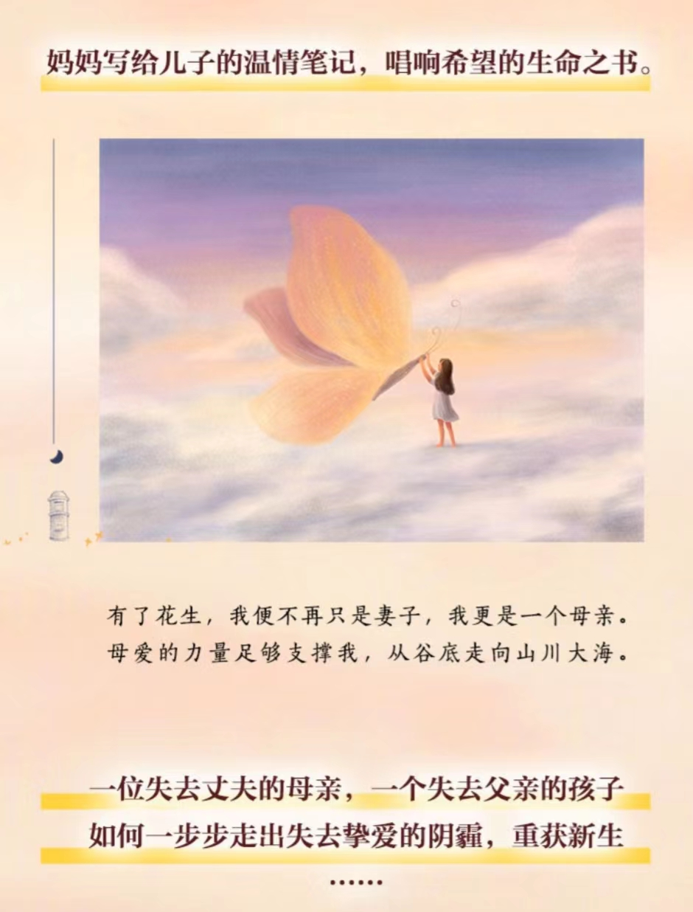

金鱼酱的文字深深刺痛了我，又给了我无尽坚韧的力量。
痛失至爱之后，金鱼酱没办法继续消沉下去，身边还有儿子花生需要照顾。她把所有思念化作生活的动力，把所有爱留给寄往星空邮局的信。
人不能永远活在过去，一定是往前走的。金鱼酱把花生送到幼儿园，把自己的家庭情况坦然地告诉了老师和一些家长，她希望孩子可以在幼儿园过得开心，交到好朋友。
后来事实表明，老师根本没有用心，对孩子们比较冷漠，甚至有体罚的行为。在金鱼酱告诉老师，花生没有爸爸之后，还在某一天谈起花生的学校情况时，说起让他多和爸爸玩。
让金鱼酱失望的是，老师提起孩子总是指着缺点不放，一点也没有关注过孩子的优点。
当老师因为体罚被曝光了，金鱼酱和其他家长一起去学校反映情况。她想，如果新闻里的残酷事实发生在自己孩子身上，根本没办法释怀，心里一阵酸楚。
作为一个转折，金鱼酱决定回到武汉去生活，回到她和小忽的家。
身为一个母亲，我非常理解金鱼酱的担忧。自打孩子出生以来，就会是妈妈一生的牵挂。尤其在他们还小的时候去上学，一点小的伤害，都会让妈妈自责不已。因为这个时候的孩子没有保护自己的能力，而作为家长，会为没有保护好孩子而痛苦悲伤。
当我读到她终于卸下心里那堵厚厚的城墙，在一个陌生人面前流出泪水的那一刻，我的眼泪也止不住的往xia流。我无法对金鱼酱的经历感同身受，但在那一刻，我却产生了ji为强大的共情。
我读着她的文字，看着她一路走来，养育了一个心中充满爱的小小男子汉（花生），带着对爱人的思念和对未来的期待，坚定的前行，我的心中也仿佛充满了力量，在这一刻，再也没什么东西能够da倒我。这或许就是金鱼酱文字的力量。
我努力的方向，就是美好的方向；我热爱的信仰，就是生活的模样！

